Misión
Impulsar la producción agrícola e industrial mediante el suministro de fertilizantes de alta calidad. Optimizamos la nutrición de los cultivos y la estructura del suelo de manera sostenible.
Especialistas en fertilizantes granulados, enmiendas de suelo y soluciones biológicas (Granulados, Polvos Solubles y Líquidos).


Especialistas en fertilización agrícola, enmiendas de suelo y soluciones de nutrición industrial y agropecuaria.
En QhymerAgro nos dedicamos al desarrollo y comercialización de soluciones eficientes para el campo y la industria. Contamos con una sólida línea de fertilizantes granulados, líquidos, polvos solubles, enmiendas minerales y orgánicas para corrección de suelos, insumos para el sector industrial, además de nuestro producto estrella Huechum qhymera.
Impulsar la producción agrícola e industrial mediante el suministro de fertilizantes de alta calidad. Optimizamos la nutrición de los cultivos y la estructura del suelo de manera sostenible.
Ser la empresa líder y referente en nutrición agrícola, acondicionamiento de suelos y soluciones industriales, reconocida por la calidad de nuestras formulaciones y un servicio integral.
Selecciona una categoría para filtrar nuestro catálogo de soluciones agrícolas e industriales.
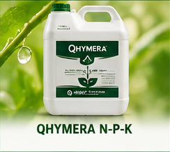
LíquidoFormulación balanceada de nitrógeno, fósforo y potasio de rápida absorción.
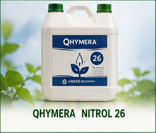
LíquidoFuente concentrada de nitrógeno foliar y radicular de alta eficiencia.
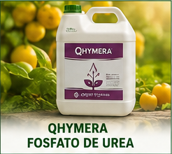
LíquidoAporte acidificante de fósforo y nitrógeno para sistemas de riego.
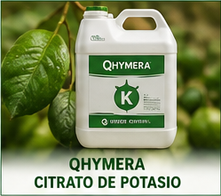
LíquidoEstimula el llenado, calibre y maduración de frutos de alta calidad.
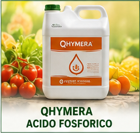
LíquidoAcondicionador de agua, corrector de pH y corrector nutricional.
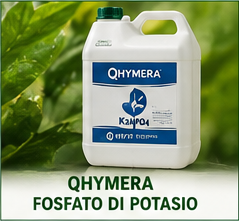
LíquidoNutrición de rápida asimilación para etapas de floración y cuajado.
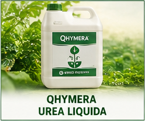
LíquidoSuministro directo de nitrógeno altamente disponible.
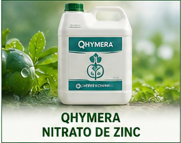
LíquidoFavorece el desarrollo hormonal, brotación y crecimiento vegetativo.
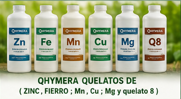
LíquidoMicroelementos: Zinc, Fierro, Mn, Cu, Mg y Quelato 8 de alta estabilidad.
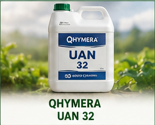
LíquidoSolución nitrogenada de tres fuentes: nítrica, amoniacal y ureica.
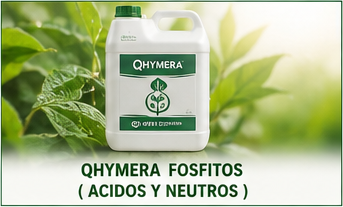
LíquidoFormulaciones que estimulan las defensas naturales y sanidad de la planta.
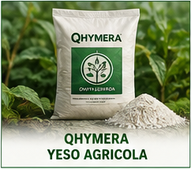
GranuladoMejora la estructura del suelo, descompacta y aporta Calcio y Azufre.
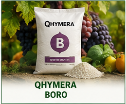
GranuladoEsencial para el crecimiento meristemático, floración y cuajado del fruto.
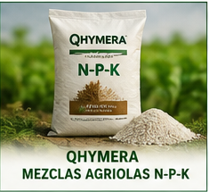
GranuladoFormulaciones físicas a la medida para todo tipo de cultivo agrícola.
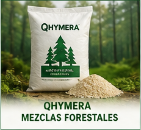
GranuladoCombinaciones nutricionales de liberación progresiva para desarrollo forestal.
⭐ Producto Estrella
Desarrollo 100% natural para potenciar el desarrollo radicular y la microbiota del suelo.
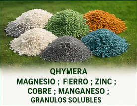
GranuladoAporte de Mg, Fe, Zn, Cu y Mn en gránulos de rápida disolución.
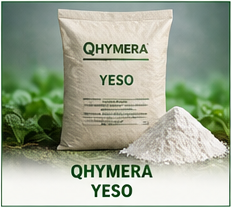
PolvoEnmienda de suelo ultrafina para acción rápida en la corrección de suelos salinos.
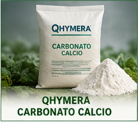
PolvoNeutraliza la acidez del suelo (sube pH) y aporta Calcio asimilable.
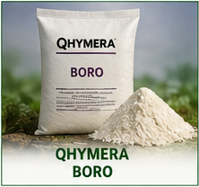
PolvoMicronutriente en formato soluble de rápida integración foliar o vía suelo.
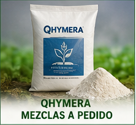
PolvoFormulaciones químicas y solubles adaptadas según análisis de suelo y cultivo.
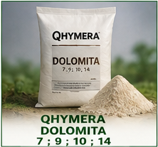
PolvoAcondicionador rico en Calcio y Magnesio disponible en distintas granulometrías.
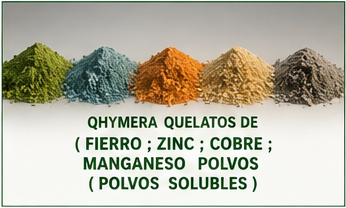
Polvo SolubleFormulaciones solubles de Fe, Zn, Cu y Mn para fertirriego y aplicación foliar.
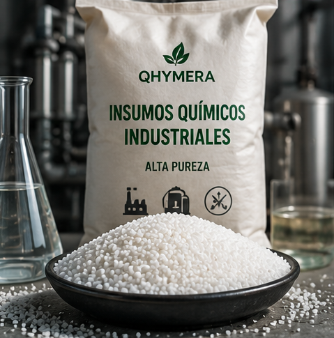
IndustrialMaterias primas de alta pureza para diversos procesos de manufactura.
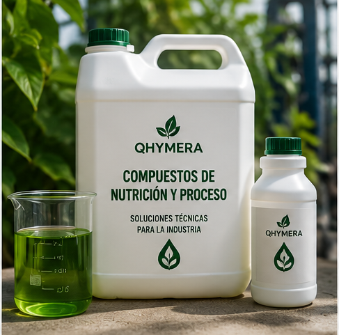
IndustrialSoluciones técnicas específicas para procesos agroindustriales.
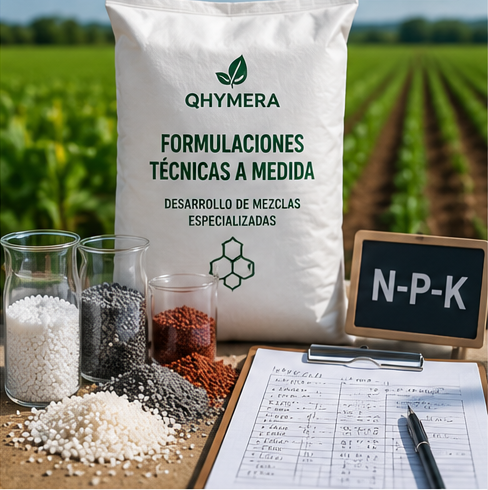
IndustrialDesarrollo de mezclas especializadas según los requerimientos del cliente.
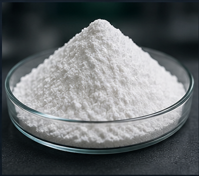
IndustrialAstringente y antiséptico mineral de rápida disolución para coagulación e industria.
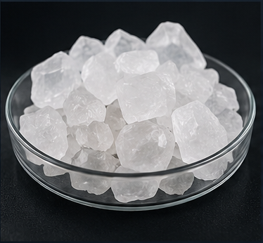
IndustrialMineral de alta pureza con propiedades astringentes y desodorantes para uso técnico.
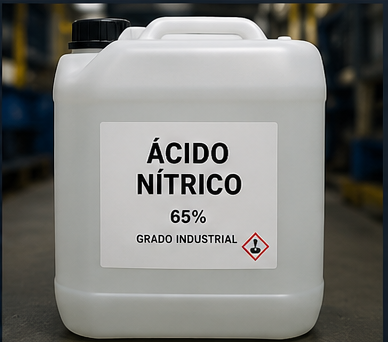
IndustrialAgente oxidante potente para decapado, pasivado de acero y síntesis química.
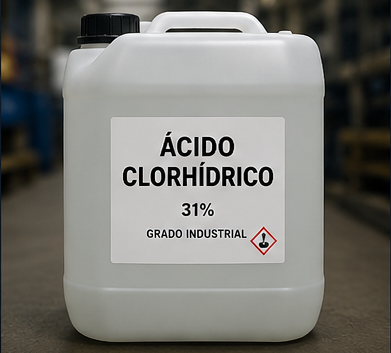
IndustrialSolución ácida fuerte para decapado de metales, regulación de pH y limpieza técnica.
Cotizar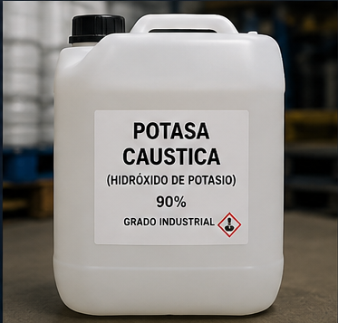
IndustrialBase fuerte soluble empleada en saponificación, limpieza industrial y síntesis.
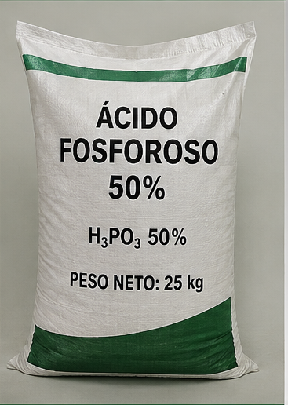
IndustrialIntermediario sintético y materia prima fundamental para formulación de fosfitos.
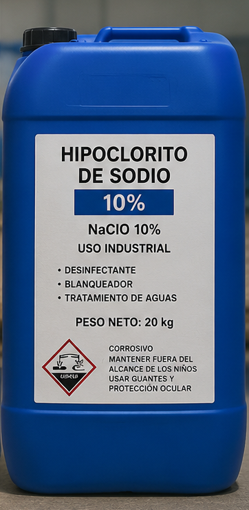
IndustrialDesinfectante concentrado de amplio espectro para sanitización y tratamiento de agua.
Insumos químicos y materias primas especializadas para procesos industriales y de manufactura:
En QhymerAgro garantizamos estándares rigurosos en la selección de nuestras materias primas y formulaciones. Ya sea para optimizar el rendimiento agrícola mediante granulados, líquidos o polvos de alta asimilación, nuestras soluciones están diseñadas para ofrecer máxima eficiencia, homogeneidad y resultados medibles en cada aplicación.
Resultados comprobados en la fertilidad de tu tierra y la eficiencia de tus procesos.
Nutrición precisa y de rápida absorción que maximiza la calidad y producción.
Enmiendas que corrigen la acidez, compactación y salinidad de la tierra.
Granulados, polvos solubles y líquidos adaptados a cada necesidad de aplicación.
Atención técnica orientada a definir la solución ideal para cada cliente.
Programas de fertilización adaptados a la demanda nutricional de cada cultivo.
Respuestas sobre nuestros productos agrícolas e industriales.
Es un desarrollo de origen natural que estimula la microbiota del suelo, potencia el crecimiento de raíces y optimiza el aprovechamiento de los fertilizantes aplicados.
La Cal corrige suelos ácidos aumentando el pH; el Yeso descompacta y neutraliza el exceso de sodio sin alterar el pH; y la Dolomita aporta un equilibrio de Calcio y Magnesio. Te asesoramos según tu análisis de suelo.
Sí, disponemos de polvos totalmente solubles y formulaciones líquidas ideales para incorporarse mediante sistemas de riego por goteo o aspersión.
Escríbenos para cotizaciones o solicitudes de asesoría técnica.